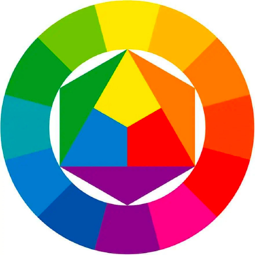

signup
introductie
Voordat we beginnen om uberhaupt iets te ontwerpen, wilde ik eerst een goede basis opschrijven voor mezelf over kleuren.
kleurenencirkel van Itten
De kleurencirkel volgens Itten werd ontwikkeld door Johannes Itten en dient als basis voor de kunstlessen op de meeste scholen. De Zwitserse kunstenaar en kunsttheoreticus Johannes Itten werd in 1888 in Wachseldorn geboren en wijdde zich al op jonge leeftijd aan de kleurentheorie. In de kleurencirkel van Itten worden kleuren onderverdeeld in primaire, secundaire en tertiaire kleuren. Deze onderverdeling is gebaseerd op de mengbaarheid van de afzonderlijke kleuren. De kleuren rood, geel en blauw vormen de primaire kleuren en worden in een driehoek weergegeven. De secundaire kleuren worden gemengd uit de basiskleuren, de primaire kleuren, en vormen nog eens drie driehoeken, die zich bevinden aan de zijde van de driehoek van de primaire kleuren. In de buitenste cirkel bevinden zich de tertiaire kleuren, waartoe de primaire kleuren en de tertiaire kleuren behoren.

Drie primaire kleuren (1):
rood, geel, blauw
Drie secundaire kleuren (2):
oranje, groen, violet
Zes tertiaire kleuren (3):
roodoranje, geeloranje, geelgroen,
blauwgroen, blauw-violet, rood-violet
De primaire kleuren kunnen niet worden gemengd uit andere kleuren, maar de secundaire kleuren kunnen ermee worden gemengd:
Violet ontstaat uit rood en blauw
Groen ontstaat uit geel en blauw
Oranje ontstaat uit rood en geel

Verschillende theorien
Complementair: deze kleuren liggen recht tegenover elkaar op het kleurenwiel. Je kan ze gebruiken om een opvallend contrast te creëren.
Analoog: analoge kleuren vind je naast elkaar op het kleurenwiel. Deze combinaties voelen comfortabel aan en vind je ook vaak terug in de natuur.
Triadisch: hier zijn de kleuren gelijkmatig verdeeld over het kleurenwiel. Ze zorgen voor levendige en opvallende combinaties, maar je moet ze voorzichtig balanceren.
Split-complementair: dit is een variatie op het complementaire kleurenschema. Het creëert een sterk contrast en geeft je meer kleuren om mee te werken. Een goede keuze voor beginners.
Tetradisch: hier zijn vier kleuren in twee complementaire paren zijn opgesplitst, wat leidt tot rijke kleurcombinaties. Dit schema werkt best wanner je een kleur dominant gebruikt en de rest als accent gebruikt.
Monochromatisch: een kleurcombinatie met slechts een kleur op het kleurenwiel. Je voegt er verschillende verzadigingen en waardes van dezelfde kleur aan toe. Deze combinatie straalt eenvoudigheid en harmonie uit. Je kan een bepaald element laten opvallen door de ‘regels te breken’ en dit in een andere kleur te zetten.
Warme kleuren
Warme kleuren zijn onder andere rood, oranje, geel en variaties van deze kleuren. Of anders gezegd: de kleuren van pittoreske herfsttaferelen, woeste vuurvlammen en romantische zonsondergangen en zonsopgangen. Deze warme kleuren worden over het algemeen gezien als energiek, gepassioneerd positief en enthousiast.
rood
Een kleur met sterke contrasten: we associëren het met liefde, maar ook met geweld. Met vurige passie en verwoestende oorlogsvoering. Met de lieftallige Cupido, maar ook met de kwaadaardige Duivel. Je ziet het al: rood is een speciale kleur. Wist je dat het zelfs een fysiek effect kan hebben op mensen? Zo kan het zowel je bloeddruk als ademhaling doen stijgen en je stofwisseling verbeteren. Tricky! Rood trekt onmiddellijk de aandacht. Daarom zijn stoplichten en waarschuwingsetiketten rood gekleurd. Ook de grootste filmsterren in Hollywood verkiezen hun entree op een rode loper. In je design kan rood een krachtige accentkleur zijn. Maar let op: het kan een overweldigend effect hebben als je het teveel gebruikt. Over het algemeen is rood een geweldige kleur om te gebruiken wanneer je kracht, passie of belang wil uitdrukken. Het is een veelzijdige kleur met felle varianten die energie uitstralen en donkere versies die eleganter zijn.

geel
Een kleur met sterke contrasten: we associëren het met liefde, maar ook met geweld. Met vurige passie en verwoestende oorlogsvoering. Met de lieftallige Cupido, maar ook met de kwaadaardige Duivel. Je ziet het al: rood is een speciale kleur. Wist je dat het zelfs een fysiek effect kan hebben op mensen? Zo kan het zowel je bloeddruk als ademhaling doen stijgen en je stofwisseling verbeteren. Tricky! Rood trekt onmiddellijk de aandacht. Daarom zijn stoplichten en waarschuwingsetiketten rood gekleurd. Ook de grootste filmsterren in Hollywood verkiezen hun entree op een rode loper. In je design kan rood een krachtige accentkleur zijn. Maar let op: het kan een overweldigend effect hebben als je het teveel gebruikt. Over het algemeen is rood een geweldige kleur om te gebruiken wanneer je kracht, passie of belang wil uitdrukken. Het is een veelzijdige kleur met felle varianten die energie uitstralen en donkere versies die eleganter zijn.
oranje
Een kleur met sterke contrasten: we associëren het met liefde, maar ook met geweld. Met vurige passie en verwoestende oorlogsvoering. Met de lieftallige Cupido, maar ook met de kwaadaardige Duivel. Je ziet het al: rood is een speciale kleur. Wist je dat het zelfs een fysiek effect kan hebben op mensen? Zo kan het zowel je bloeddruk als ademhaling doen stijgen en je stofwisseling verbeteren. Tricky! Rood trekt onmiddellijk de aandacht. Daarom zijn stoplichten en waarschuwingsetiketten rood gekleurd. Ook de grootste filmsterren in Hollywood verkiezen hun entree op een rode loper. In je design kan rood een krachtige accentkleur zijn. Maar let op: het kan een overweldigend effect hebben als je het teveel gebruikt. Over het algemeen is rood een geweldige kleur om te gebruiken wanneer je kracht, passie of belang wil uitdrukken. Het is een veelzijdige kleur met felle varianten die energie uitstralen en donkere versies die eleganter zijn.
Koude kleuren
Warme kleuren zijn onder andere rood, oranje, geel en variaties van deze kleuren. Of anders gezegd: de kleuren van pittoreske herfsttaferelen, woeste vuurvlammen en romantische zonsondergangen en zonsopgangen. Deze warme kleuren worden over het algemeen gezien als energiek, gepassioneerd positief en enthousiast.
blauw
Een kleur met sterke contrasten: we associëren het met liefde, maar ook met geweld. Met vurige passie en verwoestende oorlogsvoering. Met de lieftallige Cupido, maar ook met de kwaadaardige Duivel. Je ziet het al: rood is een speciale kleur. Wist je dat het zelfs een fysiek effect kan hebben op mensen? Zo kan het zowel je bloeddruk als ademhaling doen stijgen en je stofwisseling verbeteren. Tricky! Rood trekt onmiddellijk de aandacht. Daarom zijn stoplichten en waarschuwingsetiketten rood gekleurd. Ook de grootste filmsterren in Hollywood verkiezen hun entree op een rode loper. In je design kan rood een krachtige accentkleur zijn. Maar let op: het kan een overweldigend effect hebben als je het teveel gebruikt. Over het algemeen is rood een geweldige kleur om te gebruiken wanneer je kracht, passie of belang wil uitdrukken. Het is een veelzijdige kleur met felle varianten die energie uitstralen en donkere versies die eleganter zijn.
groen
Een kleur met sterke contrasten: we associëren het met liefde, maar ook met geweld. Met vurige passie en verwoestende oorlogsvoering. Met de lieftallige Cupido, maar ook met de kwaadaardige Duivel. Je ziet het al: rood is een speciale kleur. Wist je dat het zelfs een fysiek effect kan hebben op mensen? Zo kan het zowel je bloeddruk als ademhaling doen stijgen en je stofwisseling verbeteren. Tricky! Rood trekt onmiddellijk de aandacht. Daarom zijn stoplichten en waarschuwingsetiketten rood gekleurd. Ook de grootste filmsterren in Hollywood verkiezen hun entree op een rode loper. In je design kan rood een krachtige accentkleur zijn. Maar let op: het kan een overweldigend effect hebben als je het teveel gebruikt. Over het algemeen is rood een geweldige kleur om te gebruiken wanneer je kracht, passie of belang wil uitdrukken. Het is een veelzijdige kleur met felle varianten die energie uitstralen en donkere versies die eleganter zijn.
paars
Een kleur met sterke contrasten: we associëren het met liefde, maar ook met geweld. Met vurige passie en verwoestende oorlogsvoering. Met de lieftallige Cupido, maar ook met de kwaadaardige Duivel. Je ziet het al: rood is een speciale kleur. Wist je dat het zelfs een fysiek effect kan hebben op mensen? Zo kan het zowel je bloeddruk als ademhaling doen stijgen en je stofwisseling verbeteren. Tricky! Rood trekt onmiddellijk de aandacht. Daarom zijn stoplichten en waarschuwingsetiketten rood gekleurd. Ook de grootste filmsterren in Hollywood verkiezen hun entree op een rode loper. In je design kan rood een krachtige accentkleur zijn. Maar let op: het kan een overweldigend effect hebben als je het teveel gebruikt. Over het algemeen is rood een geweldige kleur om te gebruiken wanneer je kracht, passie of belang wil uitdrukken. Het is een veelzijdige kleur met felle varianten die energie uitstralen en donkere versies die eleganter zijn.
Neutrale kleuren
Warme kleuren zijn onder andere rood, oranje, geel en variaties van deze kleuren. Of anders gezegd: de kleuren van pittoreske herfsttaferelen, woeste vuurvlammen en romantische zonsondergangen en zonsopgangen. Deze warme kleuren worden over het algemeen gezien als energiek, gepassioneerd positief en enthousiast.
Zwart
Een kleur met sterke contrasten: we associëren het met liefde, maar ook met geweld. Met vurige passie en verwoestende oorlogsvoering. Met de lieftallige Cupido, maar ook met de kwaadaardige Duivel. Je ziet het al: rood is een speciale kleur. Wist je dat het zelfs een fysiek effect kan hebben op mensen? Zo kan het zowel je bloeddruk als ademhaling doen stijgen en je stofwisseling verbeteren. Tricky! Rood trekt onmiddellijk de aandacht. Daarom zijn stoplichten en waarschuwingsetiketten rood gekleurd. Ook de grootste filmsterren in Hollywood verkiezen hun entree op een rode loper. In je design kan rood een krachtige accentkleur zijn. Maar let op: het kan een overweldigend effect hebben als je het teveel gebruikt. Over het algemeen is rood een geweldige kleur om te gebruiken wanneer je kracht, passie of belang wil uitdrukken. Het is een veelzijdige kleur met felle varianten die energie uitstralen en donkere versies die eleganter zijn.
Wit
Een kleur met sterke contrasten: we associëren het met liefde, maar ook met geweld. Met vurige passie en verwoestende oorlogsvoering. Met de lieftallige Cupido, maar ook met de kwaadaardige Duivel. Je ziet het al: rood is een speciale kleur. Wist je dat het zelfs een fysiek effect kan hebben op mensen? Zo kan het zowel je bloeddruk als ademhaling doen stijgen en je stofwisseling verbeteren. Tricky! Rood trekt onmiddellijk de aandacht. Daarom zijn stoplichten en waarschuwingsetiketten rood gekleurd. Ook de grootste filmsterren in Hollywood verkiezen hun entree op een rode loper. In je design kan rood een krachtige accentkleur zijn. Maar let op: het kan een overweldigend effect hebben als je het teveel gebruikt. Over het algemeen is rood een geweldige kleur om te gebruiken wanneer je kracht, passie of belang wil uitdrukken. Het is een veelzijdige kleur met felle varianten die energie uitstralen en donkere versies die eleganter zijn.
grijs
Een kleur met sterke contrasten: we associëren het met liefde, maar ook met geweld. Met vurige passie en verwoestende oorlogsvoering. Met de lieftallige Cupido, maar ook met de kwaadaardige Duivel. Je ziet het al: rood is een speciale kleur. Wist je dat het zelfs een fysiek effect kan hebben op mensen? Zo kan het zowel je bloeddruk als ademhaling doen stijgen en je stofwisseling verbeteren. Tricky! Rood trekt onmiddellijk de aandacht. Daarom zijn stoplichten en waarschuwingsetiketten rood gekleurd. Ook de grootste filmsterren in Hollywood verkiezen hun entree op een rode loper. In je design kan rood een krachtige accentkleur zijn. Maar let op: het kan een overweldigend effect hebben als je het teveel gebruikt. Over het algemeen is rood een geweldige kleur om te gebruiken wanneer je kracht, passie of belang wil uitdrukken. Het is een veelzijdige kleur met felle varianten die energie uitstralen en donkere versies die eleganter zijn.
bruin
Een kleur met sterke contrasten: we associëren het met liefde, maar ook met geweld. Met vurige passie en verwoestende oorlogsvoering. Met de lieftallige Cupido, maar ook met de kwaadaardige Duivel. Je ziet het al: rood is een speciale kleur. Wist je dat het zelfs een fysiek effect kan hebben op mensen? Zo kan het zowel je bloeddruk als ademhaling doen stijgen en je stofwisseling verbeteren. Tricky! Rood trekt onmiddellijk de aandacht. Daarom zijn stoplichten en waarschuwingsetiketten rood gekleurd. Ook de grootste filmsterren in Hollywood verkiezen hun entree op een rode loper. In je design kan rood een krachtige accentkleur zijn. Maar let op: het kan een overweldigend effect hebben als je het teveel gebruikt. Over het algemeen is rood een geweldige kleur om te gebruiken wanneer je kracht, passie of belang wil uitdrukken. Het is een veelzijdige kleur met felle varianten die energie uitstralen en donkere versies die eleganter zijn.
beige
Een kleur met sterke contrasten: we associëren het met liefde, maar ook met geweld. Met vurige passie en verwoestende oorlogsvoering. Met de lieftallige Cupido, maar ook met de kwaadaardige Duivel. Je ziet het al: rood is een speciale kleur. Wist je dat het zelfs een fysiek effect kan hebben op mensen? Zo kan het zowel je bloeddruk als ademhaling doen stijgen en je stofwisseling verbeteren. Tricky! Rood trekt onmiddellijk de aandacht. Daarom zijn stoplichten en waarschuwingsetiketten rood gekleurd. Ook de grootste filmsterren in Hollywood verkiezen hun entree op een rode loper. In je design kan rood een krachtige accentkleur zijn. Maar let op: het kan een overweldigend effect hebben als je het teveel gebruikt. Over het algemeen is rood een geweldige kleur om te gebruiken wanneer je kracht, passie of belang wil uitdrukken. Het is een veelzijdige kleur met felle varianten die energie uitstralen en donkere versies die eleganter zijn.
roomkleurig / ivoor
Een kleur met sterke contrasten: we associëren het met liefde, maar ook met geweld. Met vurige passie en verwoestende oorlogsvoering. Met de lieftallige Cupido, maar ook met de kwaadaardige Duivel. Je ziet het al: rood is een speciale kleur. Wist je dat het zelfs een fysiek effect kan hebben op mensen? Zo kan het zowel je bloeddruk als ademhaling doen stijgen en je stofwisseling verbeteren. Tricky! Rood trekt onmiddellijk de aandacht. Daarom zijn stoplichten en waarschuwingsetiketten rood gekleurd. Ook de grootste filmsterren in Hollywood verkiezen hun entree op een rode loper. In je design kan rood een krachtige accentkleur zijn. Maar let op: het kan een overweldigend effect hebben als je het teveel gebruikt. Over het algemeen is rood een geweldige kleur om te gebruiken wanneer je kracht, passie of belang wil uitdrukken. Het is een veelzijdige kleur met felle varianten die energie uitstralen en donkere versies die eleganter zijn.